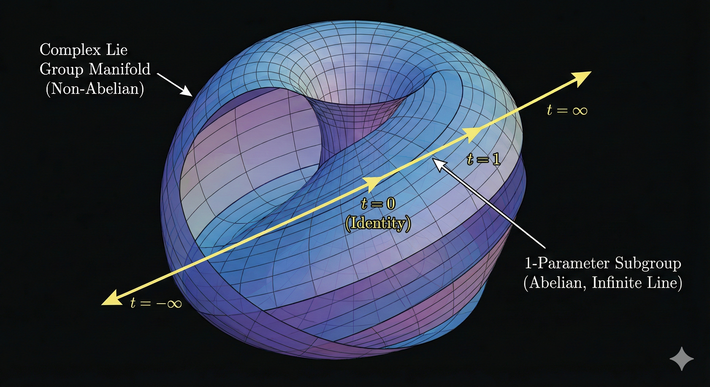
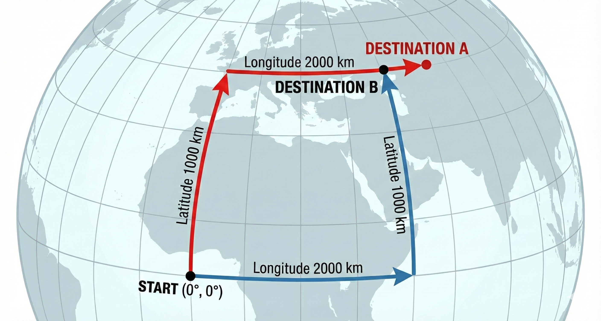

(b) Lie algebra
1. 준동형 사상(Homomorphism)
우리는 복잡한 ‘연산자 곱셈($\cdot$)‘을 쉬운 ‘파라미터 덧셈($+$)‘으로 바꿔서 계산하고 싶어 한다. 수학적으로 이 두 연산 구조가 완벽하게 일치하는 것을 준동형 사상(Homomorphism) 이라고 한다.
$$ \hat{S}(A) \cdot \hat{S}(B) \stackrel{?}{=} \hat{S}(A+B) $$하지만, 이 등식은 항상 성립하는 것이 아니다. 리 군의 종류에 따라 이 규칙은 지켜지기도 하고, 처참하게 깨지기도 한다.
2. 준동형이 성립하는 경우: “1-매개변수 부분군”
1-매개변수 (Just 1-Parameter) 는 변수가 “하나” 라는 뜻일 뿐이다. 어떻게 움직이는지에 대한 약속은 없다. (가속, 감속, 멈춤, 점프 다 가능) 부분군 (Subgroup) 은 “규칙(준동형)을 지켜라” 라는 강제성을 부여함을 의미한다.
(1) 기하학적 의미: 대칭의 축 (Axis of Symmetry)

- 무한히 뻗은 직선(Infinite Line): 울퉁불퉁한 산맥(비가환 리 군)을 뚫고 지나가는 직선 터널과 같다.
- 대칭성 (Symmetry): 이 직선 축 위의 어느 지점에 서 있든, 앞뒤로 이동하는 규칙은 완벽하게 동일하다. 즉, 이 경로는 연속적인 대칭성(Continuous Symmetry)이 보존되는 축이다.
(2) 수학적 의미: 지수 함수의 필연성
이 평평한 대칭 축 위에서는, 우리가 아는 단순 덧셈이 완벽하게 작동한다. 예로, “3만큼 이동하고 2만큼 더 이동하는 것은($\cdot$), 처음부터 5만큼 이동한 것($+$)과 같다.”
$$ \hat{S}(\tau_1) \cdot \hat{S}(\tau_2) = \hat{S}(\tau_1 + \tau_2) $$수학적으로 “입력을 더했더니 출력이 곱해지는 함수” 는 세상에 단 하나, 지수 함수(Exponential) 뿐이다. $\hat{G}$는 생성자로 다음챕터에서 상세하게 다룬다.
$$ \hat{S}(\tau) = e^{\tau \hat{G}} $$3. 준동형이 성립하는 경우: “다변수 가환 리 군”
변수가 여러 개($A, B, \dots$)라고 해서 무조건 복잡해지는 것은 아니다. 변수들이 서로를 방해하지 않는다면(독립적이라면), 여전히 단순 덧셈이 성립한다. 이를 가환(Abelian) 리 군이라고 한다.
(1) 기하학적 의미: 평평한 바둑판 (Flat Grid)
- 2차원 평면에서의 이동(Translation). $x$축 이동($A$)과 $y$축 이동($B$).
- 오른쪽으로 먼저 가고 위로 가나($A \cdot B$), 위로 먼저 가고 오른쪽으로 가나($B \cdot A$) 도착점은 같다.이 공간은 휘어있지 않고 평평(Flat) 하기 때문에, 변수가 아무리 많아도 서로 간섭하지 않는다.
(2) 수학적 의미: 교환자의 소멸
서로 순서를 바꿔도 결과가 같으므로, 오차항인 교환자가 0이 된다.
$$ [\hat{G}_i, \hat{G}_j] = \hat{G}_i\hat{G}_j - \hat{G}_j\hat{G}_i = 0 $$각 생성자는 교환이 가능하므로, 지수에 대한 덧셈이 가능하다.
$$ e^{A\hat{G}_A} \cdot e^{B\hat{G}_B} = e^{A\hat{G}_A+B\hat{G}_B} $$4. 준동형이 깨지는 경우: “다변수 비가환 리 군”

문제는 서로 다른 조작을 섞을 때(예: $x$축 회전 후 $y$축 회전) 발생한다. 이를 비가환(Non-Abelian) 이라고 하며, 이때는 우리가 아는 단순 덧셈 규칙이 깨진다.
(1) 근본 원인: 생성자의 충돌
가환 리 군과 달리, 여기서는 서로 다른 방향의 생성자들끼리 순서를 바꾸면 결과가 달라진다.
$$ [\hat{G}_A, \hat{G}_B] = \hat{G}_A \hat{G}_B - \hat{G}_B \hat{G}_A \neq 0 $$(2) 결과: BCH 공식의 등장
생성자가 꼬여있으니, 이를 사용하는 파라미터 덧셈도 당연히 성립하지 않는다. (여기서 $\hat{X} = A\hat{G}_A$, $\hat{Y} = B\hat{G}_B$ 라고 하자.)
$$ e^{\hat{X}} \cdot e^{\hat{Y}} \neq e^{\hat{X}+\hat{Y}} $$즉, 파라미터 제어판에서 $X+Y$ (벡터 합)라고 입력했는데, 실제 로봇(연산자 곱)은 엉뚱한 위치에 가 있는 것이다. 이 깨진 등호를 억지로 맞추기 위해 필요한 보정값이 바로 BCH 공식(Baker-Campbell-Hausdorff formula) 이다.
$$ \mathbf{\hat{Z}} = \hat{X} + \hat{Y} + \underbrace{\frac{1}{2}[\hat{X}, \hat{Y}] + \frac{1}{12}([\hat{X}, [\hat{X}, \hat{Y}]] + [\hat{Y}, [\hat{Y}, \hat{X}]]) + \cdots}_{\text{비가환성에 의한 보정항들}} $$$$ e^{\hat{X}} \cdot e^{\hat{Y}} = e^{\mathbf{\hat{Z}}} $$여기서 $[\hat{X}, \hat{Y}]$ (교환자)는 덧셈 규칙이 깨진 정도, 즉 “순서를 바꿨을 때 생기는 경로의 오차” 를 나타낸다. 이는 “단순히 더하면($\hat{X}+\hat{Y}$) 안 되고, 휘어진 공간의 특성($[\hat{X},\hat{Y}]$)만큼 보정해줘야 함"을 의미한다.
4. 리 대수(Lie Algebra): “준동형의 부활”
그렇다면 이 복잡한 리 군을 어떻게 다룰 것인가. 여기서 리 대수(Lie Algebra) 가 등장한다. BCH 공식에서 $A, B$가 아주 작은 미소 변환(Infinitesimal) 이라면, 오차항(교환자)은 $0$에 가깝게 무시할 수 있다. 아주 좁은 영역(접평면)에서는, 깨졌던 준동형 성질(선형성)이 다시 부활한다.
이 좁은 평평한 세상을 리 대수(Lie Algebra) 라고 부른다.
- 선형성: 여기서는 복잡한 곡면 계산 대신, 선형 대수(덧셈, 상수배) 를 마음껏 쓸 수 있다. ($e^\hat{X} e^\hat{Y} \approx e^{\hat{X}+\hat{Y}}$)
- 생성자(Generator): 이 평평한 공간의 기저(Basis)가 바로 생성자 $\hat{G}$ 들이다. (앞서 미소 변환에서 구한 기울기다.)
- 지수화(Exponentialization): 우리는 이 평면 지도(Lie Algebra) 위에서 쉬운 덧셈으로 길을 찾은 뒤, 지수 함수를 통해 실제 곡면(Lie Group)으로 투영한다.